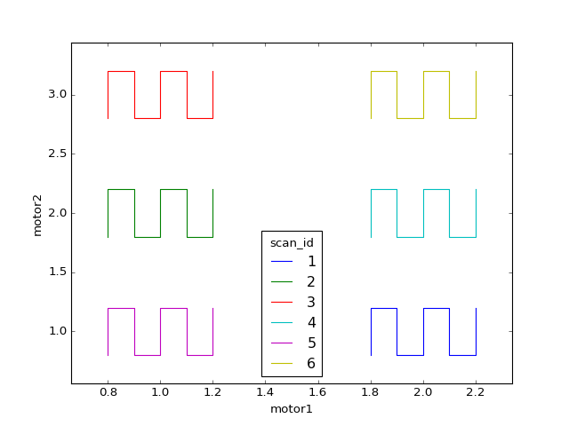

Scan a grid around each sample in a grid¶
Problem¶
Examples are arranged on a substrate. There are two motors, x and y, for moving a detector over the subtrate. Scan a grid of readings around the center position of each sample.
Approach¶
Specify the samples and their arrangement as a mapping of sample names to
(x, y) positions, like {'A': (1, 1), 'B': (1, 2)}. Write a custom plan that
loops through the samples. For each sample, move to sample’s center position
and perform a relative_outer_product_scan() (i.e., grid scan) around
that position. For each sample, one run will be saved. Include the sample name
in the metadata.
Example Solution¶
from collections import ChainMap
from bluesky.plans import (abs_set, relative_outer_product_scan, wait,
run_decorator, stage_decorator, subs_decorator)
from bluesky.callbacks import LiveTable, LivePlot
from bluesky.examples import det4, motor1, motor2
def grid_in_grid(samples):
"""
Scan a grid around the neighborhood of each sample.
Parameters
----------
sample : dict
mapping each sample's name to its (x, y) position
"""
# In this example we hard-code the hardware and other parameters. For more
# flexibility, they could instead be parameters to the function.
detector = det4
x = motor1
y = motor2
x_range = y_range = 0.2
x_num = y_num = 5
@subs_decorator([LiveTable([detector, x, y]),
LivePlot('motor2', 'motor1')])
def plan():
for name, position in samples.items():
# Prepare metadata.
md = {'sample': name}
# Move to the cetner of the sample position.
x_pos, y_pos = position
yield from abs_set(x, x_pos)
yield from abs_set(y, y_pos)
yield from wait()
# Scan a grid around that position.
yield from relative_outer_product_scan([detector],
x, -x_range, x_range, x_num,
y, -y_range, y_range, y_num,
True, md=md)
yield from plan()
# Example usage:
samples = {'A': (1, 1),
'B': (1, 2),
'C': (1, 3),
'D': (2, 1),
'E': (2, 2),
'F': (2, 3)}
RE(grid_in_grid(samples))
Demo output:

In [1]: RE(grid_in_grid(samples))
NameErrorTraceback (most recent call last)
<ipython-input-1-1617e9f88388> in <module>()
----> 1 RE(grid_in_grid(samples))
NameError: name 'grid_in_grid' is not defined